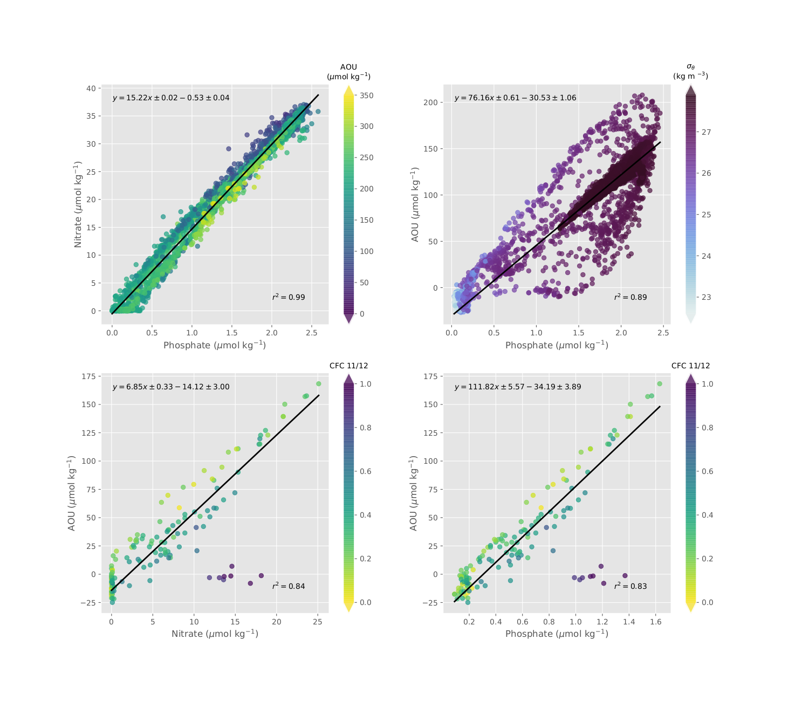

Entry 24¶
Tracing water masses with nutrients¶
Juliana Leonel
These four are where created with the The WOCE Hydrographic Program Office (WHPO) data for the Atlantic section (A16, see Out4 [4] for a map). The data bottle have records of salinity, temperature, oxygen, phosphate, nitrate, and total inorganic carbon in the water column.
The goal of this figure is to teach the concept of the [Redfield ratio](https://en.wikipedia.org/wiki/Redfield_ratio) and how we can identify water masses based on nutrients that are not being re-mineralized as predicted by Redfield.
In the top left panel we can see that the proportion of Nitrate to Phosphate is linear and almost exactly what we expect from Redfield (15.3 to 1 and we got 15.22 to 1). This means that all the nutrients are being re-mineralized and consumed at the expected rate.
However, in the top right panel, we can see a lot of scattered points that makes this deviate from the expected ratio for Apparent Oxygen Utilization and Phosphate (AOU), expected 66.48 to 1 but got 76.1 to 1. This indicates that some nutrients may have been pre-formed before the system reached a balance. This extra nutrient won’t be utilized in the biogeochemical sense and can be used as a tracer for water masses.
In order to investigate the scatter we can filter the date based on the density layer. This can help us reduce the number of water masses we are looking at. The bottom panels show the Nitrate/AOU (left) and Phosphate/AOU (right) ratios for the density layer of >=25,<= 26.7 kg m$^{-3}$.
This is a layer closer to the surface, probably where the extra nutrients are coming from. The colors the CFC-11/CFC-12 ratio normalized, that gives an idea of the [water mass age](https://en.wikipedia.org/wiki/Chlorofluorocarbon#CFC_and_SF6_tracer-derived_age_of_ocean_water).
We can note easily that the “outliers” are older and therefore, the pre-formed nutrients we want to use as tracer for this particular water mass.